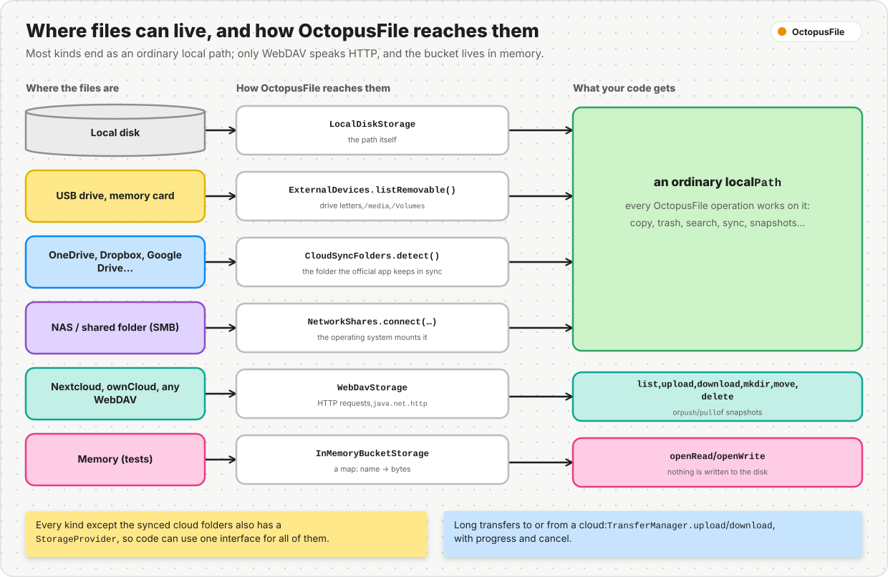
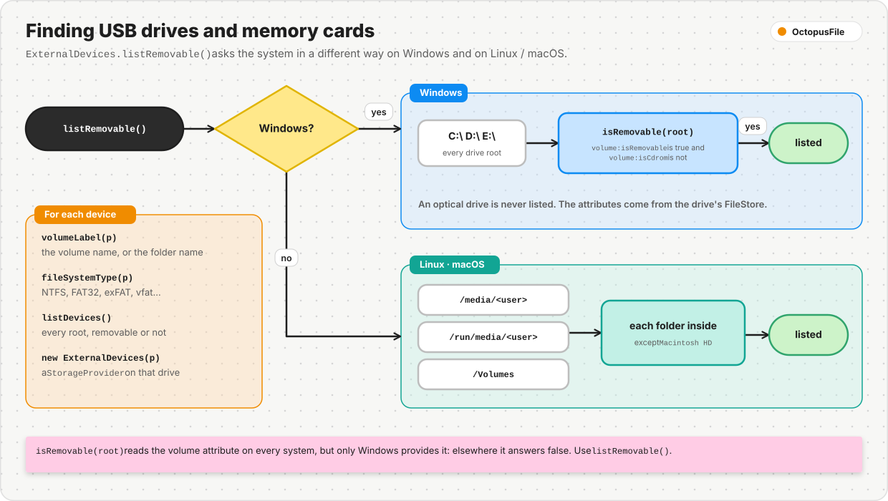
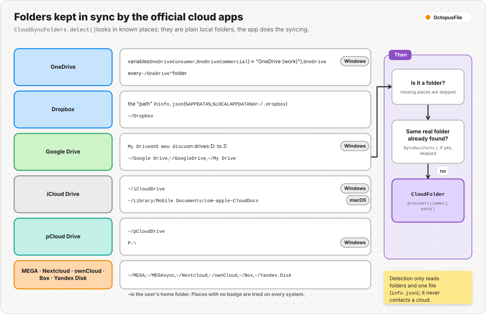
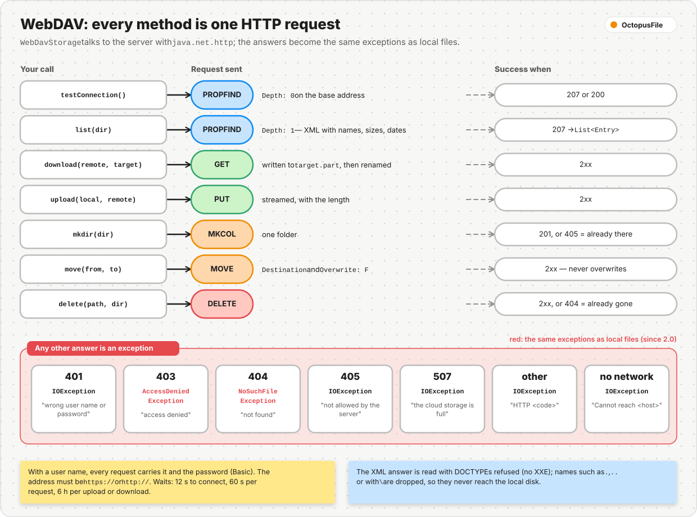
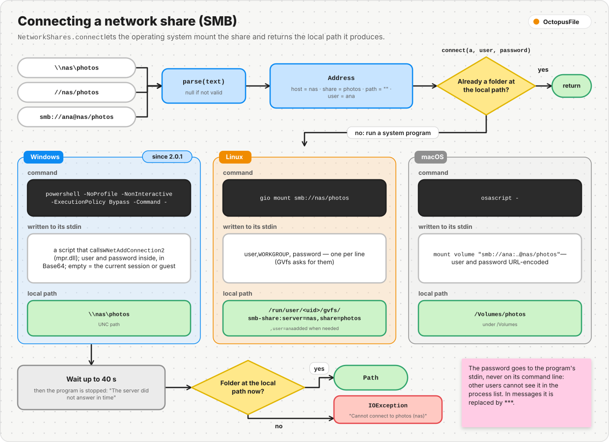
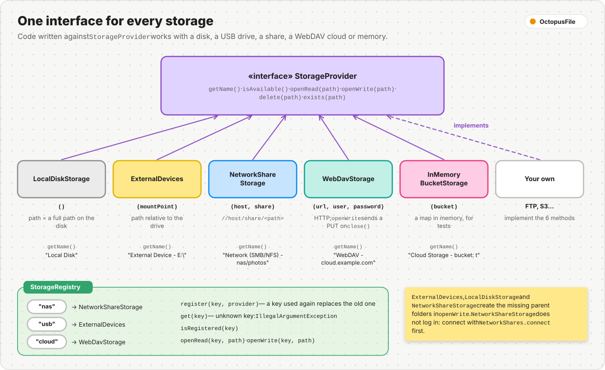

Storage: devices, clouds and network shares

External devices#

javafor (Path p : ExternalDevices.listRemovable()) { // pen drives, memory cards, USB disks
System.out.println(ExternalDevices.volumeLabel(p) + " (" + ExternalDevices.fileSystemType(p) + ")");
}
isRemovable(root) checks one drive with the volume:isRemovable attribute of its file store (CD/DVD drives are left out): reliable on Windows. On Linux and macOS use listRemovable(), which looks at the mounts under /media/<user>, /run/media/<user> and /Volumes (except Macintosh HD).
Synced cloud folders#

javafor (CloudSyncFolders.CloudFolder c : CloudSyncFolders.detect()) {
System.out.println(c.name() + " -> " + c.path());
}
Finds the folders kept in sync by the official apps: OneDrive, Dropbox, Google Drive, iCloud, MEGA, Nextcloud, ownCloud, pCloud, Box and Yandex Disk. They are plain local folders.
WebDAV clouds#

Nextcloud, ownCloud, Box, pCloud, Yandex Disk, Koofr, NAS boxes and any WebDAV server, with java.net.http.
javaWebDavStorage dav = new WebDavStorage("https://cloud.example.com/remote.php/dav/files/ana/", "ana", "app-password".toCharArray());
dav.testConnection();
for (WebDavStorage.Entry e : dav.list("/Documents")) {
System.out.println(e.name() + (e.directory() ? "/" : ""));
}
dav.upload(Path.of("report.pdf"), "/Documents/report.pdf", bytes -> { }, () -> false);
Also mkdir, delete, move, download. Errors are clear (wrong user name or password, not found, the cloud storage is full). The XML parser refuses DOCTYPEs (no XXE) and names like .. from the server are ignored. To keep the password at rest, see CredentialVault. For progress and cancel, use TransferManager.upload/download (transfers).
Network shares (SMB)#

javaNetworkShares.Address a = NetworkShares.parse("\\\\nas\\photos"); // also //nas/photos, smb://ana@nas/photos
Path local = NetworkShares.connect(a, "ana", "secret".toCharArray());
The operating system makes the connection and OctopusFile uses the local path it produces: a UNC path on Windows (connected with the Windows API; with no user, the current session is used), gio mount (GVfs) on Linux, mount volume on macOS. The password never goes on a command line. connect blocks for up to about 40 s; call it outside the UI thread. isAvailable(address) checks without connecting.
One interface for all — StorageProvider#

LocalDiskStorage, ExternalDevices, NetworkShareStorage, WebDavStorage and InMemoryBucketStorage (for tests) implement StorageProvider: getName(), isAvailable(), openRead(path), openWrite(path), delete(path), exists(path). StorageRegistry keeps providers by key, so your own (FTP, S3, …) can be plugged in:
javaStorageRegistry registry = new StorageRegistry();
registry.register("nas", new NetworkShareStorage("nas", "photos"));
try (InputStream in = registry.openRead("nas", "2026/beach.jpg")) { ... }
Examples compiled and run by DocExamplesTest